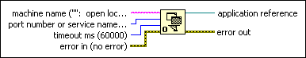

Open Application Reference Function
Owning Palette: Application Control VIs and Functions
Requires: Base Development System
Returns a reference to a VI Server application running on the specified computer.
If you specify an empty string for machine name, it returns a reference to the local LabVIEW application in which this function is running. If you do specify a machine name, it attempts to establish a TCP connection with a remote VI Server on that machine on the specified port.

 Add to the block diagram Add to the block diagram |
 Find on the palette Find on the palette |